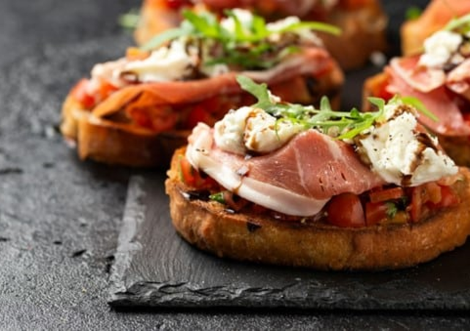

Bruschetta
Ingrédients :
- Pain de campagne ou baguette
- Tomates bien mûres
- Ail
- Basilic frais
- Huile d'olive
- Sel, poivre
Préparation :
- Frotte les tranches de pain avec de l’ail et fais-les griller légèrement.
- Coupe les tomates en petits dés, ajoute du sel, du poivre, du basilic ciselé et de l’huile d’olive.
- Dispose le mélange sur les tranches de pain grillé.
- Ajoute un filet d’huile d’olive avant de servir.